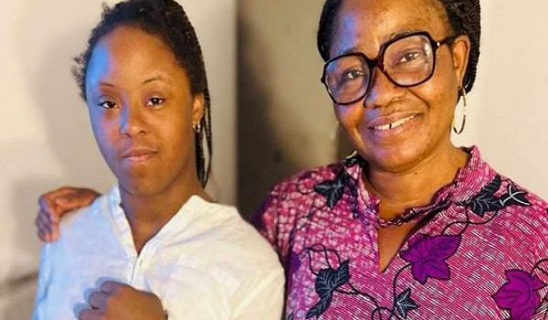

Diaspora : Patricia Koré créé une association pour venir en aide aux personnes handicapées
De nationalité Ivoirienne et installée en France depuis longtemps, Patou comme l'appelle affectueusement ses proches est une femme qui déborde d'énergie. A côté de son travail cette mère de 5 enfants qu'elle a élevés toute seule, milite dans plusieurs associations du quartier. Nous sommes voisins et à ce titre, il m'arrive de la croiser régulièrement.
Ephrem Kobri Boda(EKB) :Patou, tu vas où encore ?
Madame Patricia Koré (MPK): J'ai Rdv pour des démarches pour mon association.
EKB: Quel dynamisme ! Et le courage, elle en a vraiment besoin car dans cette vie qu'elle mène paisiblement avec sa petite famille, malheureusement le sort en décida autrement avec la naissance de sa fille, la belle petite Abigaelle atteinte de la trisomie 21. Croyante, elle n'en voudra à personne remettant tout dans les mains de Dieu. C'est lui et lui seul qui a décidé ainsi. Il sait pourquoi ?
MKP:Ma fille je l'aime comme tous mes autres enfants et je me battrai pour qu'elle ait une vie comme tous ses camarades.
EKB:Loin de la décourager, bien au contraire
cette situation de sa fille lui donna une idée.
Celle de créer une association loi 1901 pour venir en aide à
tous les autres enfants victimes d'handicap moteur , cognitif
ou physique. Et c'est de là que naquit Amiceh (Association
des mères isolées en charge d'enfants handicapés) crée à
Paris le 15 Août 2022 avec ses propres enfants qui
conscients de la situation que vit leur soeur, n'ont pas hésité
une seconde à soutenir leur mère.
C'est donc ensemble que toute la famille se bat pour
apporter de l'espoir à tous les enfants qui vivent le même
handicap qu'Abigaelle. Une enfant, d'ailleurs pleine de vie et
bien entourée par maman et toute la famille. L'association a
donc besoin d'aide pour aider les autres.D'ailleurs elle prépare une rencontre avec les médias afin
de médiatiser son association car ce qui arrive à ses
enfants là, on le souhaite jamais mais peut arriver à
n'importe qui, alors en choeur faisons parler nos coeurs pour
aider tous ces enfants qui ne demandent qu'à vivre comme
les autres de leurs âges . AMICEH est domicilié au 5
Avenue de la Porte Monmartre 75018 Paris.
Tel 07 67 02 78 06
Mail: Association.amiceh@gmail.com.
Ephrem Kobri Boda Correspondant ivoirebusiness
Paris .